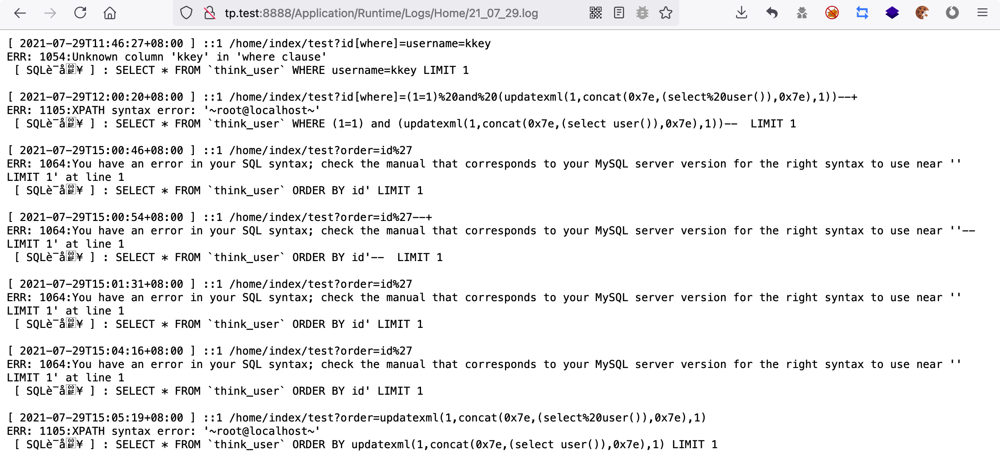

总结 ThinkPHP3 代码审计方法
本文最后更新于：3 天前
0x00 简介
ThinkPHP 是国内著名的 php开发框架，基于MVC模式，最早诞生于2006年初，原名FCS，2007年元旦正式更名为ThinkPHP
本文主要分析 ThinkPHP v3 的程序代码，通过对 TP3 代码结构分析、底层代码分析、经典历史漏洞复现分析等，学习如何审计 MVC 模式的程序代码，遇到使用 TP3 的代码能够独立审计。即使不想对 TP3 代码做过多了解的小伙伴通过本文也能对TP3程序的漏洞有个清晰的认识
ThinkPHP v3.x 系列最早发布于 2012 年，于 2018 年停止维护，其中使用最多的是在 2014 年发布的 3.2.3，本文审计代码也是这个版本。也许TP 3现在很少能见到了，但通过对TP 3的完整代码分析，能更好入门 MVC 程序的代码审计
0x01了解ThinkPHP 3
目录结构
1）tp3程序根目录（默认也是web部署目录）
TP3的初始目录结构如下：
1 | |
web根目录部署常见问题
这个时期的 web 根目录部署上都有一个明显的问题，程序的所有文件都位于在 WEB 根目录目录下，这将导致程序的敏感文件也会可以通过 web 服务获取。如可以直接访问 Application/Runtime/Logs/ 下的日志文件，网上也有对应的通过爆破获取 tp3 程序中的日志文件
2）框架目录
1 | |
3）应用目录
TP 3 采用模块化的设计架构，
1 | |
每个模块是相对独立的，其目录结构如下：
1 | |
Common模块是一个特殊的模块，是应用的公共模块，访问所有的模块之前都会首先加载公共模块下面的配置文件（Conf/config.php）和公共函数文件（Common/function.php）
配置文件
在 ThinkPHP 中，一般来说应用的配置文件是自动加载的，加载的顺序是：
惯例配置->应用配置->模式配置->调试配置->状态配置->模块配置->扩展配置->动态配置
以上是配置文件的加载顺序，后面的配置会覆盖之前的同名配置
- 惯例配置
惯例配置文件：ThinkPHP/Conf/convention.php。该文件一般不会修改
- 应用配置
应用配置文件也就是调用所有模块之前都会首先加载的公共配置文件，默认位于 Application/Common/Conf/config.php
- 模块配置
每个模块会自动加载自己的配置文件，位于 Application/当前模块名/Conf/config.php
在获取到目标程序源码时翻一翻这些配置文件主要收获在于获取数据库的配置信息
另外也可以翻翻模型代码，可能会有意外收获，因为在TP 3中实例化模型的时候可以使用dns连接数据库
1 | |
另外一点需要注意的是，TP3中一个配置文件就可以实现很多信息的配置，如数据库配置信息，路由规则配置等都会放在一个文件中。在TP5中则是通过专门的文件去配置不同的需求，如路由配置文件专门负责配置路由，数据库配置文件专门负责配置数据库信息
路由处理
在 TP3 中默认路由处理方式如下：
1 | |
还可以使用兼容模式
1 | |
TP3 具有路由转发的功能，具体路由规则在应用配置文件，或者模块配置文件中，上面有提及这两个文件的位置
配置方式如下：
1 | |
如果路由规则位于应用配置文件，路由规则则作用于全局。如果路由规则位于模块配置文件，则只作用于当前模块，在访问对应路由时要加上模块名，如在home模块配置文件定义了如上的路由，访问方式为http://test.com/home/news/1
快捷方法
TP 3 对一些经常使用操作封装成了快捷方法，目的在于使程序更加简单安全。在TP 3官方文档中并没有做系统的介绍，不过在TP 5中就有系统整理，并且还给了一个规范命名：助手函数
快捷方法来自 ThinkPHP/Common/functions.php，下面介绍几个
I方法
PHP 程序一般使用 $_GET, $_POST 等全局变量获取外部数据， 在ThinkPHP封装了一个I方法可以更加方便和安全的获取外部变量，用法格式如下：
1 | |
示例：
1 | |
如果没有传入过滤的方法，系统会采用默认的过滤机制，这个可以在配置文件中获取
C方法
读取配置文件里面的数据
1 | |
M方法/D方法
用于数据模型的实例化操作，具体这两个方法怎么实现，有什么区别，暂时就不多关注了，只用知道通过这两个快捷方法能快速实例化一个数据模型对象，从而操作数据库
1 | |
模型
TP3 是基于 MVC 模式的架构，数据库和程序大部分逻辑都在模型M处处理。TP3 在模型M的底层设计上，出现了很多 sql 注入这样的问题，这里复现它的漏洞前，先熟悉一下底层的设计
\Think\Model类
TP3 的模型基类为 \Think\Model类，在 ThinkPHP/Library/Think/Model.class.php 中被定义。该类实现了ActiveRecord模式
1 | |
继承模型基类示例
生成 Application/Home/Model/UserModel.class.php ，定义了一个 UserModel 模型类继承了模型基类
1 | |
模型实例化
模型实例化有以下几种方法：
1）首先通过类名可以直接实例化
实例化上面定义的 UserModel 类
1 | |
2）另外 ThinkPHP 还提供了快捷方法，用于实例化模型：D方法和M方法
D 方法用于实例化具体的模型类
1 | |
M 方法不会加载具体的类，而是直接实例化利用模型基类，只定义一个名字，这样就能指定对应的表名，性能会高一点
1 | |
3）实例化空模型类
使用原生SQL查询的话，不需要使用额外的模型类，实例化一个空模型类即可进行操作了，例如：
1 | |
模型基类的数据库操作
TP3 模型基础类Model类 提供了很多操作数据库的方法，下面看一下一些常用方法：
- where()
决定 where 字段的构造
where方法的参数支持字符串和数组，主要用于获取sql语句的where部分
1）参数为数组
1 | |
最后执行的SQL语句：
1 | |
2）参数为字符串
1 | |
最后执行的sql语句：
1 | |
3）存在漏洞的用法
然后我就发现一种存在漏洞的写法，通过双引号包裹参数变量自动解析，这样传入的参数不会被过滤，通过闭合单引号和括号就能造成sql注入，即使这里使用 I方法 过滤也无效，从而造成sql注入，在代码审计时可以注意下程序中是否存在这个情况
1 | |
实际sql语句
1 | |
- select()
执行 select 查询，获取数据表中的多行记录
- find()
执行 select 查询，读取数据表中的一行数据
示例：
1 | |
TP 3还提供链式操作，假如我们现在要查询一个User表的满足状态为1的前10条记录，并希望按照用户的创建时间排序
1 | |
0x02 安全过滤机制
TP3 在I方法和数据库操作时都提供有自动安全过滤的操作
I 方法的安全过滤
ThinkPHP/Common/functions.php
下面对 I方法 的代码做了大量化简，保留了关键逻辑代码
$name参数是一个字符串，前面提到的格式有get.id, post.name/s，I方法就需要对这样的字符串做解析- 首先I方法解析出
$name字符串中接收数据的方法$method，数据类型和数据$data - 通过
$filter方法对$data做过滤，一般$filter为空，就会调用系统默认过滤方式htmlspecialchars
1 | |
- 最后
$data还要通过think_filter()检查，就是匹配数据中是否具有敏感字符，如果$data匹配到敏感字符就在数据后添加一个空格，这步操作看似很奇怪，后面会讲这么做的用途
1 | |
这里注意 thinkphp3.2.3 中敏感字符不包含BIND，该版本就因为这一点存在一个sql注入的风险
数据库操作的安全过滤
通过I方法获取外部数据默认会做一些安全过滤，上面看到的系统默认配置有 htmlspecialchars，这个方法能防御大部分的xss注入。因为现在很多程序会使用预编译，所以 TP 中一般不采用I方法对外部数据做sql注入的过滤
所以 TP3 在数据库操作上也有自己的安全过滤方式，TP3有自己的预编译处理方式，在没有使用预编译的情况下，TP3才会做addslash()这样的过滤，而TP3中出现的sql注入问题就是在没有使用预编译的情况下，忽略了一些该过滤的地方
在这里实在佩服挖到这些漏洞的大佬，最近看MVC模式的代码理解流程都很困难，他们却在复杂的代码中找到关键的问题
示例程序
本小节主要通过如下示例代码分析TP3是如何处理sql操作，如何拼接sql语句，如何做安全过滤等操作
这是一个常见的外部输入where查询条件的sql操作，对TP3数据库操作有一定的普适性
Application/Home/Controller/IndexController.class.php
1 | |
访问下面的链接
1 | |
最终执行的sql语句为：
1 | |
下面将仔细分析示例程序sql执行的流程
按照链式操作的顺序，会依次执行field()、where()、select()。field()用于处理查询的字段，这里数据不可控，我们也不关注了
where()方法
先看where()的逻辑，where() 用于构造sql语句的where条件语句部分，这是常见的sql注入点。前面提到，模型类提供的where()方法可以接收数组参数或字符串参数 $where，然后 where() 方法将会把相关数据解析到模型对象的 options 数组属性中，用于后续拼接完整的sql语句
- 如果
$where为字符串时，$parse为传入where()的另一个参数，将会被escapeString过滤，然后将$parse格式化放在$where中，最后该字符串的值被放在$where['_string']中。这里过滤的明明白白，就不在考虑这种写法的sql注入问题了 - 如果
$where为数组，也是官方推荐的一种方式，在where()方法中并没有直接过滤，我们需要关注后续对该值的处理 $where最终将放在当前模型对象的options['where']中，供后面处理
1 | |
select() 方法
上面知道如果传入where()的参数为字符串，则直接会被过滤，那传入数组参数是否会经过安全检测呢？
接下来看看select()是怎么处理的，where()方法将where字段部分数据放到了模型对象的options数组属性中保存，select()方法将主要通过options数组组成最终的sql语句，其底层将由 ThinkPHP/Library/Think/Db/Driver.class.php 封装完成，过程比较复杂，下面用一张图简诉其流程

可以看到最终的sql语句将由 buildSelectSql() 完成，其中由parseTable(),parseWhere()等若干方法完成sql语句各个set字段的组成
其中where字段由parseWhere()解析，因为前面对字符串参数已经过滤了，parseWhere()并没有在做过滤（具体代码上图忽略了），而是对数组参数进行了过滤，处理细节位于parseWhereItem()，我们需要关注parseWhereItem()是否做到了严丝合缝
parseWhereItem()
- **parseWhereItem()**接收两个参数
$key和$val，分别来自为opention['where']的键和值 - 首先需要知道的是最终过滤的方法是
parseValue()，过滤的值是$val，过滤后的$var和$key组成$whereStr即最终的where字段 - 当
$val为数组形式时，会进入一个表达式判断，$exp=$val[0]，$exp即为表达式，sql代码的表达式有EQ（等于）、LIKE（模糊查询等）……- 可以看到，当
$exp的值为bind，exp，IN 运算符时，不会经过 parseValue() 的过滤，那么这里就有可能存在一种绕过过滤的可能 $exp值为bind时，where语句会加上= :，这会影响后面注入的语句（不过有人发现delete等方法可以消除该符号的影响，这个漏洞后面会具体分析）；为IN运算符时，最后构造的sql语句会加上in运算符，稍有干扰；值为exp似乎是最佳选择
- 可以看到，当
- 当
$val不为数组形式时，必会受到parseValue()的过滤，遂放弃
1 | |
然后就构造一个poc验证一下
1 | |
然后跟踪调试过程发现并没有按照预想的进入'exp' == $exp的逻辑，原因是我们传入的exp被加了一个空格，这似乎和I方法有关系

所以这里也发现了官方为什么强调要使用I方法接收外部数据，如果没有使用I方法，而是直接使用$_GET等接收外部变量，那么这里就有sql注入的问题
1 | |
实际注入sql语句：
1 | |
小结
目前分析了 ThinkPHP V3.2.3对通过I方法对输入变量的安全过滤流程、数据库在解析select语句中的where字段时的安全过滤流程。也发现如果没有按照规范的方法使用 ThinkPHP 也是有可能存在SQL注入问题的。这些不规范的写法也是代码审计时需要找出的问题
0x03 历史漏洞
update注入漏洞
在安全过滤机制一节中主要分析了 select() 方法对 where() 传入的数组参数的处理过程，其中遇到了这样的情况：
$exp的值为 ‘bind’ 时，构造的 where 字段中间会受到 “ = : “ 符号的影响，但是有人却找到了模型类的save()方法可以消除” : “的影响，最终造成sql注入漏洞，该小节就是关注这一点$exp的值为 ‘exp’ 时，基本不会受到影响，但 exp 在think_filter()中是特殊字符，$exp最终值会被加空格，无法进入到该逻辑中
1 | |
save()的使用
ThinkPHP的模型基类使用save()方法实现了SQL update的操作，用法如下，要更改的数据需要通过数关联组形式传递
1 | |
也可以改成对象方式来操作：
1 | |
构造save()的场景
这里我们构建一个使用save()方法的场景，并且where()传入数组形式的参数，目的是为了进入bind的处理逻辑。外部参数我们使用严格I方法来接收
1 | |
为了进入 ‘bind’ 的处理逻辑，下面将构造以下连接测试注入：
1 | |
save()处理逻辑
where() 的处理逻辑在安全过滤机制一节中有提到，当我们传入数组参数时在where()中不会被过滤，参数最终会被放到模型对象的 options 数组属性中保存。上面分析过select()怎么处理的options数组，现在将来 save() 的处理方式
ThinkPHP/Library/Think/Model.class.php
- where()方法上面已经分析过，只需要知道当前model类对象的
$options存储着where字段的数据，$data则是存放的set字段的数据 $data，$options是组成sql语句的关键，最终将交于db->update()实现
1 | |
ThinkPHP/Library/Think/Db/Driver.class.php
把重点放到底层update()的实现上：
1 | |
- 首先
$data由parseSet()解析为set字段，parseSet() 就不细看了，==该方法解析的set字段的将会用命名（:name）形式的占位标记符，其中占位标记符的值已经放在了bind数组中==，可以看出tp想做预编译的操作了

然后就进入where字段的解析，解析方法为
parseWhere()parseWhere()也不进入细看了，就是数组参数最终会交给parseWhereItem()解析parseWhereItem()前面已有分析，这里也不再仔细分析了，当注入的$exp（代表运算符）等于bind时，传入的参数不会被过滤，而是在where字段中添加” =: “符号，本漏洞的关键点在于如何去消除这个” : “符号的影响如下图，==where字段的数据奇怪的加入了这个预编译，明显where字段的值没有加入bind数组，这里也很关键，因为后面bind数组会被过滤==

$sql为最终解析完成的sql语句，交于execute()执行
跟踪 execute() 方法：
1 | |
$str即为要执行的sql语句- 重点关注
$this->queryStr的处理，这里会执行两个函数，一个strst()字符串替换函数，一个使用array_map()调用的匿名函数- 匿名函数就是调用
escapeString()过滤bind数组，前面知道 ==bind 数组只有set字段的值，where字段的值还是没有被过滤== strst()将会把占位标记符转换为 bind 数组中对应的值，如：$bind=[‘:0’=>’111’,’:1’=>’222’]，那么sql语句中**’:0’字符会被替换为‘111’，‘:1’被替换为‘222’**。==利用的关键点来了，我们把where语句最终控制为”:0”，那么替换时”:”将被消除，从而消除了:对注入语句的影响==
- 匿名函数就是调用

$this->queryStr语句处理好后，再通过预编译执行该语句，可惜其中的占位标记符已经被替换了，在预处理前就已经发生了注入，漏洞产生
验证漏洞
poc如下，传入的name为数组，name[0]=bind目的是进入bind的逻辑，name[1]为payload数据，其中第一位字符要为0
1 | |
实际执行的sql语句
1 | |
验证图：

官方修复
前面提到利用I方法获取输入时并没有过滤BIND，导致我们可以进入BIND的逻辑，从而使得我们的数组参数从头到尾都没有被过滤。官方便在这一点上做了过滤。所以该漏洞在ThinkPHP<=3.2.3都是存在的
注意：如果没有使用I方法接收外部数据，那么下面的修复就没有意义了，这漏洞照样使用

select&delete 注入漏洞
这其实是ThinkPHP的一个隐藏用法，在前面提到，ThinkPHP使用where()，field()等方法获取获取sql语句的各个部分，然后存放到当前模型对象的 $this->options 属性数组中，最后在使用 select() 这些方法从 $this->options 数组中解析出对应的sql语句执行
但在阅读代码过程中发现find()，select()，delete()本身可以接收 $options 数组参数，覆盖掉 $this->options 的值。不过这种用法官方文档并没有提及，想要遇到这中情况可能还需要开发者们配合，下面看看这个漏洞是怎么产生的，这里分析find()方法
代码分析
ThinkPHP/Library/Think/Model.class.php
1 | |
find()可以接收外部参数$options，官方文档没有提及这个用法getPk()获取当前的主键，默认为’id’$options为数字类型或字符串类型时，$where['id']=$options,$options['where']=$where，该处只可以控制部分where字段的值，利用比较苛刻$options为数组类型时，且主键$pk也为数组类型时，将会进入复合主键查询。但一般默认主键$pk=id，不为数组$options最终由_parseOptions()获取。跟踪_parseOptions()方法，可以看到最终$options将由**find()方法传入的$options和where()**等方法传入的$this->options合并完成，注意array_merge()第二个参数是会覆盖第一个参数的值的，所以如果find()方法传入的$options可控，那么整个sql语句也可控
1 | |
现在sql语句可控了，能想到的是在数据库底层类中的parsewhere()方法解析where字段时，对字符串参数不会过滤，由下面代码，需要控制$options['where']为字符串类型即可
1 | |
场景构造
构造一个find()方法接收外部参数，这种写法可能存在漏洞
1 | |
漏洞利用
poc如下，要传入id[‘where’]数组
1 | |
实际执行的sql语句为
1 | |
官方修复
官方在修复上就是在 _parseOptions() 处忽略了外部传入的 $options，这样我们传入的数据只能用于主键查询，而主键查询最终会转换为数组格式，数组格式数据在后面也会被过滤，那么这个漏洞就不存在了

Model.class.php 类中 delete(), select() 方法具有相同问题，也在ThinkPHP3.2.4中被修复
小结
可以看到ThinkPHP在处理sql查询时分的很细，做出了一个可控的主键查询这个功能，让用户可以控制主键查询的值，但始终保存主键查询的数据为数组形式可以被过滤，就保证了数据的安全性，但却忽略了一些意外的情况，导致sql注入。这个漏洞同样是需要很对ThinkPHP底层逻辑十分清楚
order by 注入漏洞
代码分析
ThinkPHP的模型基类Model并没有直接提供order的方法，而是用 __call() 魔术方法来获取一些特殊方法的参数，代码如下：
ThinkPHP/Library/Think/Model.class.php
1 | |
当调用模型对象的 order() 方法时，因为模型对象不具有order()便触发了 __call() 方法，在 __call() 方法中，传入order()方法的第一个参数 $arg[0] 将赋值给 $this->options['order']
最终 options[‘order’] 将由给 parseOrder() 解析
ThinkPHP/Library/Think/Db/Driver.class.php
在 Thinkphp3.2.3 中 parseOrder() 实现的十分简单
1 | |
- parseOrder()的参数
$order来自$options['order'] - 过程对
$order没有任何过滤，可以任意注入。。。
场景构造
构造一个order参数可控的场景，不过似乎很少有程序会把查询排序的参数交给用户
1 | |
漏洞利用
poc：
1 | |
实际执行sql语句
1 | |
系统修复
在看系统修复代码时发现，ThinkPHP3.2.4主要采用了判断输入中是否有括号的方式过滤，在ThinkPHP3.2.5中则用正则表达式过滤特殊符号。另外该在 ThinkPHP<=5.1.22 版本也存在这样的漏洞，利用方式有一些不同
在复现该漏洞时发现其他博主的代码和我的不一样，我这里以官网下载的代码为准
缓存漏洞
ThinkPHP 中提供了一个数据缓存的功能，对应S方法快捷方法，可以先将一些数据保存在文件中，再次访问该数据时直接访问缓存文件即可
缓存文件示例
按照缓存初始化时候的参数进行缓存数据
1 | |
下次在读取该值时通过缓存文件可以更快获取
1 | |
先访问test()，生成缓存数据
1 | |
发现生成文件：Application/Runtime/Temp/b068931cc450442b63f5b3d276ea4297.php

然后访问cache()，获取缓存数据

上面就是缓存文件生成和使用的过程
代码分析
具体分析一下 S 方法的代码是怎么产生漏洞的：
ThinkPHP/Common/functions.php
S方法会实例化一个$cache对象，$cache对象具有查看缓存，删除缓存和写缓存的动能，这里我们只关注写缓存的 set() 方法
1 | |
ThinkPHP/Library/Think/Cache/Driver/File.class.php
- 先看
file_put_contents()，就是这里写入了文件，我们需要控制其中的两个参数，文件名$filename, 写入数据$data - 文件名
$filename来自方法filename($name)，其中$name为S方法的外部参数，如果该参数可控，可能会导致文件名被控制，filename()是怎么操作的等下细看 - 写入数据
$data来自$value处理后的数据，$value可控$value先经过序列化- 然后使用
<?php\n//,?>包裹 $value 序列化后的值，这是要写入一个php文件呀，危险！注意这里使用了行注释符//，保证写入的数据不会被解析，但是我们可以通过换行符等手段轻松绕过
1 | |
下面关注一下文件的命名方式，具体方法为filename()
C('DATA_CACHE_KEY')就是获取配置文件中 DATA_CACHE_KEY 的值，==该值默认为空。该值为空时，$name最终的md5加密值也就清楚了==$this->options['prefix']默认为空，最终的文件名则将由$this->options['temp']决定$this->options['temp']默认为Application/Runtime/Temp- 所以在默认情况下，写入缓存的文件名应该为：
Application/Runtime/Temp/md5($name)，$name为S方法外部参数
1 | |
漏洞利用
poc如下
1 | |
0x0d - \r, carrige return 回车
0x0a - \n, new line 换行
Windows 中换行为0d 0a，UNIX 换行为 0a
参数名 name 决定泄露缓存文件名，md5(name)=b068931cc450442b63f5b3d276ea4297，文件名则为：b068931cc450442b63f5b3d276ea4297.php，默认目录为Application/Runtime/Temp，然后访问我们的php文件

小结
利用该漏洞需要文件名完全可控，所以得知道程序定义DATA_CACHE_KEY和options[‘prefix’]，好在这两个参数默认为空。不过利用该漏洞需要知道程序在哪里使用了S方法，且S方法的参数可控，所以该漏洞基本只能通过代码审计找出，如果有了程序的源代码，那么文件名就更不是问题了
另外需要注意的是该漏洞被利用的另外一个原因 TP3 不安全的 web 目录部署，导致生成的缓存文件是可以直接访问的，在 TP5 一些版本中也有这个漏洞，但是 TP5 的 web 目录部署更加安全，这个漏洞并一定能利用
0x04 总结
本文主要总结了在审计 TP3 框架的代码时应该注意的点，在 TP3 框架基础知识上应该知道路由处理，快捷方法，模型的运作等，在漏洞审计方面应该知道哪些不规范的写法可能会造成漏洞，另外通过复现 TP3 历史漏洞知道，即使是规范的写法也是可能存在漏洞的。
本文篇幅较大，为了方便日后审计 TP 3的代码，这里简单总结下 TP3 的漏洞审计，至于没有提到的点，通过正常的代码审计方法也能正常审计 TP3 的代码，该部分根据日后的经验持续完善
sql注入漏洞总结
以下面的sql语句为例
1 | |
其中’xxx’的字符都有可能通过外部数据可控，在 TP3 中各字段由以下方法控制
| 字段 | 方法 |
|---|---|
| AAA | field() |
| BBB | table() |
| CCC | where() |
| DDD | where() |
| EEE | order() |
在代码审计时主要关注该版本是否存在漏洞，这些方法的写法是否规范
1）没有按官方要求传入参数
使用双引号解析参数基本都会绕过tp的过滤，下面发现where()就有这样的情况，其他方法应该也有，在这种情况下即使使用了I方法也没有用
1 | |
2）没有使用 I方法 接收外部参数
虽然sql过滤不是在I方法中，但如果没有使用I方法接收参数，可能会让数据绕过底层的过滤。
如下没有使用I方法，通过注入bind的数组值会进入tp3处理bind数据的逻辑，从而绕过过滤
1 | |
3）tp3存在sql注入漏洞
利用现有漏洞，即使程序使用了规范的写法也有可能存在漏洞。该点需要注意TP3的版本，在TP3.2.3及以前的版本基本存在漏洞
1 | |
参考：
ThinkPHP3.2.3完全开发教程：https://www.kancloud.cn/manual/thinkphp/
Thinkphp3 漏洞总结：https://y4er.com/post/thinkphp3-vuln/
Thinkphp3个版本数据库操作以及底层代码分析：https://hu3sky.github.io
Thinkphp v3.2.3 select&find&delete 注入漏洞：https://xz.aliyun.com/t/2629
Thinkphp v3.2.3 update注入漏洞：https://www.anquanke.com/post/id/104847
ThinkPhp3.2.3缓存漏洞复现以及修复建议：https://www.pianshen.com/article/4312352780/
本博客所有文章除特别声明外，均采用 CC BY-SA 4.0 协议 ，转载请注明出处！